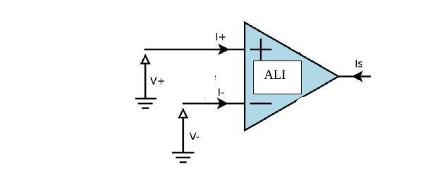

Électricité 5 — Filtres linéaires
1. Fonction de transfert d'un quadripôle
Définition 1
En régime sinusoïdal forcé, la fonction de transfert d'un quadripôle est $\underline H = \dfrac{\underline s}{\underline e}$. L'argument de $\underline H$ est le déphasage de $s(t)$ par rapport à $e(t)$ ; le module de $\underline H$ est le gain du quadripôle (sans unité) :
$$\text{Arg}(\underline H) = \varphi_{s/e} \qquad |\underline H| = G = \frac{|\underline s|}{|\underline e|}$$
2. Bande passante à -3dB
Définition 2
Un filtre ne laisse passer que les tensions dont la pulsation est dans la bande passante $[\omega_{c1},\omega_{c2}]$, définie par les pulsations de coupure telles que :
$$G(\omega_{\text{coupure}}) = \frac{G_{max}}{\sqrt2}$$
Propriété 1
Le gain en décibels est $G_{dB}=20\log G$. La bande passante est équivalemment définie par $G_{dB}(\omega_{\text{coupure}}) = G_{dB,max}-3\,\text{dB}$ (on parle de bande passante « à -3dB »).
3. Décomposition harmonique d'un signal périodique
Théorème 1 — série de Fourier
Tout signal $v(t)$ périodique de période $T=2\pi/\omega_0$ s'écrit :
$$v(t) = V_0 + \sum_{k=1}^{\infty} V_k\cos(k\omega_0 t+\varphi_k) = V_0+\sum_{k=1}^\infty\big[a_k\cos(k\omega_0t)+b_k\sin(k\omega_0t)\big]$$
avec $a_k = \dfrac{2}{T}\displaystyle\int_0^T v(t)\cos(k\omega t)\,dt$, $\ b_k=\dfrac{2}{T}\displaystyle\int_0^T v(t)\sin(k\omega t)\,dt$.
Définition 3 — vocabulaire
$V_0$ : valeur moyenne. $V_1\cos(\omega_0t+\varphi_1)$ : composante fondamentale. $V_k\cos(k\omega_0t+\varphi_k)$ ($k\geqslant2$) : harmonique de rang $k$. Le spectre de $v(t)$ est le diagramme en bâtons des $V_k$ en fonction de $\omega_k=k\omega_0$.
Théorème 2 — valeur efficace (Parseval)
$$\langle v^2\rangle = \frac1T\int_0^T v^2(t)\,dt = v_{eff}^2 = V_0^2+\frac{V_1^2}{2}+\frac{V_2^2}{2}+\dots = V_0^2+\sum_{k=1}^\infty\frac{V_k^2}{2}$$
4. Diagramme de Bode
Définition 4
Tracer le diagramme de Bode, c'est tracer $\text{Arg}(\underline H)=\varphi_{s/e}$ et $G_{dB}=20\log G$ en fonction de la pulsation (ou de la fréquence), en portant $\log(\omega)$ en abscisse (échelle « semi-log ») pour représenter un domaine de pulsations très étendu.
Remarque
On trace d'abord le diagramme asymptotique (en faisant figurer les pentes), puis on passe au diagramme réel.
5. Amplificateur linéaire idéal (ALI)
Définition 5 — hypothèses de l'ALI
$$i_+ = i_- = 0 \qquad i_S \neq 0 \qquad v_+ = v_-$$
(courants d'entrée nuls, courant de sortie non nul, égalité des potentiels d'entrée en régime linéaire non saturé.)

Quiz de fin de chapitre
1. Comment définit-on la bande passante à -3dB d'un filtre ?
Réponse
C'est l'intervalle de pulsations $[\omega_{c1},\omega_{c2}]$ tel que le gain aux bornes de cet intervalle vaille $G_{max}/\sqrt2$, ou de façon équivalente $G_{dB,max}-3$dB (Définition 2, Propriété 1).
C'est l'intervalle de pulsations $[\omega_{c1},\omega_{c2}]$ tel que le gain aux bornes de cet intervalle vaille $G_{max}/\sqrt2$, ou de façon équivalente $G_{dB,max}-3$dB (Définition 2, Propriété 1).
2. Qu'est-ce que la « composante fondamentale » d'un signal périodique ?
Réponse
C'est le terme $V_1\cos(\omega_0t+\varphi_1)$ de la décomposition en série de Fourier (Définition 3), oscillant à la fréquence fondamentale $\omega_0=2\pi/T$ du signal — c'est en général l'harmonique de plus grande amplitude.
C'est le terme $V_1\cos(\omega_0t+\varphi_1)$ de la décomposition en série de Fourier (Définition 3), oscillant à la fréquence fondamentale $\omega_0=2\pi/T$ du signal — c'est en général l'harmonique de plus grande amplitude.
3. Un filtre a un gain maximal $G_{max}=10$. Calculer le gain à la pulsation de coupure, en valeur et en dB.
Réponse
$G(\omega_{\text{coupure}})=10/\sqrt2\approx7{,}07$. En dB : $G_{dB,max}=20\log10=20$dB, donc $G_{dB}(\omega_{\text{coupure}})=20-3=17$dB (Définition 2, Propriété 1).
$G(\omega_{\text{coupure}})=10/\sqrt2\approx7{,}07$. En dB : $G_{dB,max}=20\log10=20$dB, donc $G_{dB}(\omega_{\text{coupure}})=20-3=17$dB (Définition 2, Propriété 1).
4. Un signal a pour valeur moyenne $V_0=2\,\text{V}$, fondamentale $V_1=3\,\text{V}$ et un seul harmonique $V_2=1\,\text{V}$. Calculer sa valeur efficace.
Réponse
$v_{eff}^2 = V_0^2+\dfrac{V_1^2}{2}+\dfrac{V_2^2}{2} = 4+4{,}5+0{,}5=9$, donc $v_{eff}=3\,\text{V}$ (Théorème 2).
$v_{eff}^2 = V_0^2+\dfrac{V_1^2}{2}+\dfrac{V_2^2}{2} = 4+4{,}5+0{,}5=9$, donc $v_{eff}=3\,\text{V}$ (Théorème 2).
5. Pourquoi utilise-t-on une échelle logarithmique (log $\omega$) pour tracer un diagramme de Bode plutôt qu'une échelle linéaire ?
Réponse
Parce que le comportement d'un filtre doit souvent être étudié sur un domaine de fréquences très étendu (plusieurs ordres de grandeur, du Hz au MHz par exemple) : une échelle linéaire écraserait les basses fréquences au profit des hautes, alors qu'une échelle logarithmique donne autant de place visuelle à chaque décade, rendant le comportement asymptotique (pentes constantes en dB/décade) directement lisible (Définition 4).
Parce que le comportement d'un filtre doit souvent être étudié sur un domaine de fréquences très étendu (plusieurs ordres de grandeur, du Hz au MHz par exemple) : une échelle linéaire écraserait les basses fréquences au profit des hautes, alors qu'une échelle logarithmique donne autant de place visuelle à chaque décade, rendant le comportement asymptotique (pentes constantes en dB/décade) directement lisible (Définition 4).
6. Que se passerait-il si l'on tentait d'appliquer l'hypothèse $v_+=v_-$ de l'ALI (Définition 5) alors que l'amplificateur est saturé ?
Réponse
L'hypothèse $v_+=v_-$ n'est valable qu'en régime linéaire non saturé : en saturation, la sortie est bloquée à une valeur limite (proche de la tension d'alimentation) indépendamment de l'écart $v_+-v_-$, qui peut alors être important — appliquer $v_+=v_-$ dans ce régime conduirait à un résultat physiquement faux.
L'hypothèse $v_+=v_-$ n'est valable qu'en régime linéaire non saturé : en saturation, la sortie est bloquée à une valeur limite (proche de la tension d'alimentation) indépendamment de l'écart $v_+-v_-$, qui peut alors être important — appliquer $v_+=v_-$ dans ce régime conduirait à un résultat physiquement faux.
7. Piège classique : le gain $G_{dB}=20\log G$ (Propriété 1) utilise-t-il un facteur 20 ou un facteur 10 comme pour une puissance ?
Réponse
Le facteur est bien 20, car $G$ ici est un rapport de tensions (ou d'amplitudes), pas de puissances : la puissance étant proportionnelle au carré de la tension, $10\log(G^2)=20\log G$ — c'est cette élévation au carré implicite qui explique le facteur 20 (au lieu de 10 pour un rapport de puissances directement).
Le facteur est bien 20, car $G$ ici est un rapport de tensions (ou d'amplitudes), pas de puissances : la puissance étant proportionnelle au carré de la tension, $10\log(G^2)=20\log G$ — c'est cette élévation au carré implicite qui explique le facteur 20 (au lieu de 10 pour un rapport de puissances directement).
8. Piège classique : les courants d'entrée nuls de l'ALI ($i_+=i_-=0$, Définition 5) signifient-ils que l'ALI ne peut fournir aucun courant au reste du circuit ?
Réponse
Non — c'est justement l'inverse : $i_+=i_-=0$ ne concerne que les entrées ; la sortie peut fournir un courant $i_S\neq0$ (Définition 5) grâce à l'alimentation de l'amplificateur, qui apporte l'énergie nécessaire. Confondre « pas de courant en entrée » et « pas de courant du tout » est un piège classique en début d'étude de l'ALI.
Non — c'est justement l'inverse : $i_+=i_-=0$ ne concerne que les entrées ; la sortie peut fournir un courant $i_S\neq0$ (Définition 5) grâce à l'alimentation de l'amplificateur, qui apporte l'énergie nécessaire. Confondre « pas de courant en entrée » et « pas de courant du tout » est un piège classique en début d'étude de l'ALI.
9. Synthèse : reliez la fonction de transfert $\underline H=\underline s/\underline e$ (Définition 1) à la notion d'impédance complexe vue au chapitre précédent (Régime sinusoïdal) — en quoi un filtre RC simple est-il un exemple à la fois de quadripôle et de diviseur de tension complexe ?
Réponse
Un filtre RC (par exemple $e$ aux bornes de $R$ et $C$ en série, $s$ pris aux bornes de $C$) est un diviseur de tension complexe utilisant l'impédance $\underline Z_C=1/(jC\omega)$ (chapitre « Régime sinusoïdal ») : $\underline H=\underline s/\underline e = \underline Z_C/(\underline Z_R+\underline Z_C)$. La fonction de transfert d'un filtre n'est donc, dans les cas simples, qu'une application directe du diviseur de tension déjà vu en régime continu, mais avec des impédances complexes dépendant de $\omega$ — ce qui explique que $|\underline H|$ (le gain) varie avec la fréquence.
Un filtre RC (par exemple $e$ aux bornes de $R$ et $C$ en série, $s$ pris aux bornes de $C$) est un diviseur de tension complexe utilisant l'impédance $\underline Z_C=1/(jC\omega)$ (chapitre « Régime sinusoïdal ») : $\underline H=\underline s/\underline e = \underline Z_C/(\underline Z_R+\underline Z_C)$. La fonction de transfert d'un filtre n'est donc, dans les cas simples, qu'une application directe du diviseur de tension déjà vu en régime continu, mais avec des impédances complexes dépendant de $\omega$ — ce qui explique que $|\underline H|$ (le gain) varie avec la fréquence.
10. Synthèse : un signal carré (riche en harmoniques impaires) traverse un filtre passe-bas de bande passante étroite. Décrivez, à l'aide des notions de spectre (Théorème 1, Définition 3) et de gain (Définition 1), la forme approximative du signal de sortie.
Réponse
Le filtre passe-bas atténue fortement (gain $G\ll1$) toutes les harmoniques dont la fréquence dépasse la bande passante (Définition 2), ne laissant passer, avec un gain proche de $G_{max}$, que la composante moyenne $V_0$ et éventuellement la fondamentale $\omega_0$ si elle est dans la bande passante (Théorème 1). Le signal de sortie perd donc l'essentiel de ses harmoniques de rang élevé responsables des « coins » raides du signal carré, et ressemble à une sinusoïde (la fondamentale) superposée à une valeur moyenne — c'est le principe même du filtrage passe-bas appliqué à la décomposition spectrale.
Le filtre passe-bas atténue fortement (gain $G\ll1$) toutes les harmoniques dont la fréquence dépasse la bande passante (Définition 2), ne laissant passer, avec un gain proche de $G_{max}$, que la composante moyenne $V_0$ et éventuellement la fondamentale $\omega_0$ si elle est dans la bande passante (Théorème 1). Le signal de sortie perd donc l'essentiel de ses harmoniques de rang élevé responsables des « coins » raides du signal carré, et ressemble à une sinusoïde (la fondamentale) superposée à une valeur moyenne — c'est le principe même du filtrage passe-bas appliqué à la décomposition spectrale.
Sources
- Document source : « Filtres linéaires » (résumé de cours, Prépa Barthou, Pau)
- Programme officiel de Physique-Chimie, CPGE 1re année (filière PCSI), bloc « Filtrage linéaire, analyse de Fourier » : enseignementsup-recherche.gouv.fr
- H-Prépa Physique 1re année (Hachette Éducation) — chapitre « Filtres linéaires, diagramme de Bode »